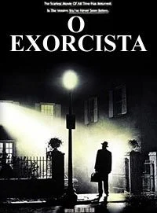
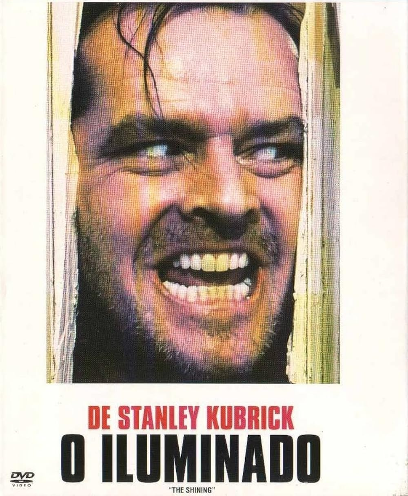

5 Clássicos dos Anos 70 que Ainda Assustam!
Mergulhe na década que deu origem a alguns dos filmes de terror mais influentes e perturbadores da história do cinema. Leia mais...
Seus Piores Pesadelos em Review

Considerado um dos filmes mais assustadores de todos os tempos, um marco do terror sobrenatural dos anos 70.

O clássico de Stephen King adaptado por Brian De Palma, um terror psicológico sobre vingança e poderes telecinéticos.

Uma mistura aterradora de ficção científica e horror, com uma das criaturas mais icônicas do cinema.

A obra-prima de Stanley Kubrick que mergulha no terror psicológico e no isolamento de forma inesquecível.

Um clássico da paranoia e do body horror, onde a confiança se desfaz em meio a uma ameaça alienígena.

Freddy Krueger aterroriza os sonhos de adolescentes neste slasher inovador e icônico dos anos 80.

Uma fantasia de horror visceral de Clive Barker, introduzindo o icônico Pinhead e o mundo dos Cenobitas.

Um thriller psicológico que mistura terror e suspense, com atuações marcantes e um serial killer inesquecível.

O slasher que redefiniu o gênero nos anos 90 com metalinguagem, suspense e muita diversão.
Mergulhe na década que deu origem a alguns dos filmes de terror mais influentes e perturbadores da história do cinema. Leia mais...
Explore como os anos 80 moldaram o subgênero de monstros e criaturas, com efeitos práticos que ainda impressionam. Leia mais...
Descubra filmes pouco falados que trazem ideias inovadoras e medos únicos dessas décadas. Leia mais...
Uma jornada pelo universo do terror "trash", que se tornou cult por sua criatividade excêntrica e baixo orçamento. Leia mais...